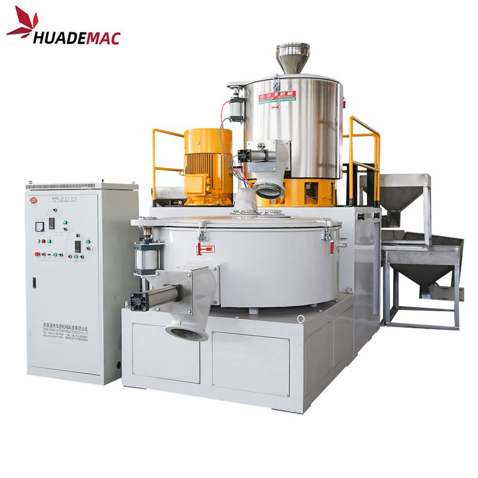
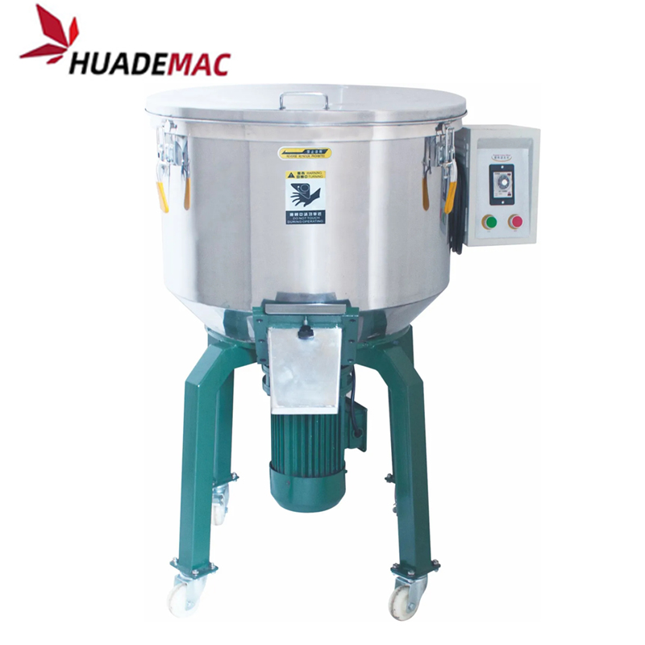
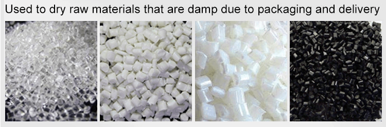

PPR PE Pellet Pigment Vertical Mixer
Batch-blend polymer pellets and pigment before processing.
Inquire about this product Prepare a detailed project brief
Equipment overview
PP ABS PVC Pet Plastic Color Vertical Mixer
Raw Material PP ABS PVC Pet Plastic Color Vertical Mixer
HS-series vertical batch mixer is suitable for mixing of powder and granule material.
The mixing can be finished quicky and completely.
The ideal structure and design make it easy for operation, and also easy for clean and maintenance.It is mainly used for mixing and stirring of plastics material .Also it is widely used in the industry of powder metallurgy, pharmacy, chemicals, foodstuff,ceramic ware and so on.It is ideal for mixing. Features: ·Both mixing pail and vane are made of stainless steel, easy to clean and absolutely no pollution. ·The chain safety device can protect the safety of operator and machine. ·The material is thick ,strong and durable. ·Well-distributed mixing can be done in a short time, low energy consumption and high efficiency. ·Time setting can be controlled easily and precisely in the range of 0-15 minutes.
Technical specifications
Reference configurations from the product catalogue. Confirm output, dimensions and equipment selection for your material and project.
| ITEM | Capacity (kg) | Rotating Speed(r/min) | Inner diameter(mm) | Power(kw) | Dimension(cm) | Weight(kg) |
|---|---|---|---|---|---|---|
| G5-620 | 50 | 85 | Φ62*46 | 1.5 | 950*1060*1060 | 100 |
| G5-850 | 100 | 60/82 | Φ85*60 | 3 | 1320*1350*1350 | 230 |
| G5-950 | 150 | 48/70 | Φ95*60 | 4 | 1220*1280*1280 | 250 |
| G5-1000 | 200 | 48/70 | Φ100*60 | 5.5 | 1320*1350*1300 | 280 |
| G5-1100 | 250 | 48/70 | Φ110*60 | 7.5 | 1420*1480*1500 | 320 |
Detailed Images
Drying Mixer
We are specialized manufacturers from China, Reconditioned Plastic Machines, Granule Drying Mixers suppliers/factory, wholesale high-quality products of Pp Pellet Blender R & D and manufacturing, we have the perfect after-sales service and technical support. Look forward to your cooperation!

Equipment video
Ask about this machine
PPR PE Pellet Pigment Vertical Mixer